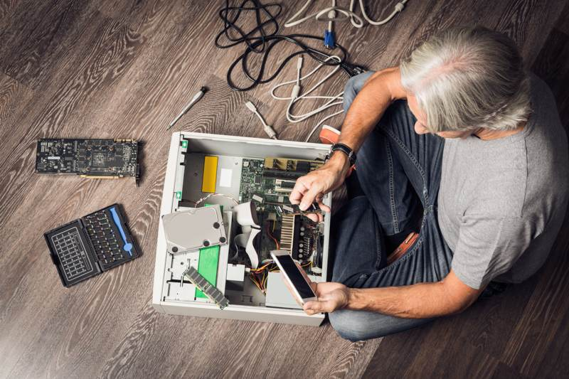

Introduction to Desktop Hardware Upgrades
In the bustling tech hub of Edmonton, businesses are always looking for ways to boost productivity and efficiency. One effective strategy is upgrading desktop hardware. This case study explores a successful hardware upgrade project conducted by a medium-sized company in Edmonton, highlighting the challenges faced, solutions implemented, and the benefits reaped.
Identifying the Need for Upgrades
The company noticed a decline in employee productivity due to frequent system crashes and slow processing speeds. Upon consulting with IT experts, it was determined that the existing hardware was outdated and unable to support modern software efficiently. A comprehensive assessment revealed that upgrading certain components could significantly enhance performance.
The primary areas identified for improvement included the central processing units (CPUs), memory (RAM), and storage systems. By focusing on these elements, the company aimed to not only improve system speed but also ensure compatibility with advanced software applications necessary for their operations.
Choosing the Right Components
After evaluating several options, the company decided on a phased approach to upgrading their hardware. The selection of components was guided by factors such as budget constraints, future scalability, and compatibility with existing systems. The company opted for:
- High-performance CPUs: To handle more demanding applications and multitasking.
- Increased RAM: Ensuring smoother operation of multiple applications simultaneously.
- Solid State Drives (SSDs): For faster data retrieval and improved boot times.

Implementation and Overcoming Challenges
The upgrade process was strategically planned to minimize disruptions. It was executed in stages, starting with non-critical systems to test compatibility and performance improvements. The IT team worked after hours to install new components, ensuring that business operations remained uninterrupted during working hours.
Challenges such as unforeseen compatibility issues with legacy software were addressed promptly. The team utilized virtualization technology to run older applications on newer hardware, ensuring continuity and efficiency.
Measuring Success
Post-upgrade, the company conducted a thorough evaluation to measure performance improvements. Key performance indicators (KPIs) such as system uptime, processing speed, and employee productivity showed significant improvements. Employees reported fewer technical issues, allowing them to focus more on core tasks rather than troubleshooting hardware-related problems.
Benefits Realized
The successful hardware upgrade resulted in several tangible benefits for the company:
- Enhanced Productivity: Faster systems reduced wait times for data processing, enabling employees to accomplish more in less time.
- Cost Savings: Reduced need for frequent repairs and maintenance of old systems led to decreased IT expenses.
- Future-Proofing: Upgraded systems are better equipped to handle future software upgrades and technological advancements.
Conclusion: A Blueprint for Success
This case study demonstrates how strategic planning and execution of desktop hardware upgrades can lead to significant improvements in business operations. By investing in efficient technology solutions, companies in Edmonton and beyond can enhance their competitive edge and drive growth. For businesses considering similar upgrades, this case study offers valuable insights into achieving a successful transition with minimal disruptions.